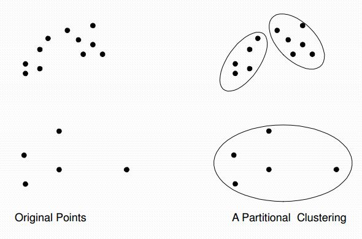
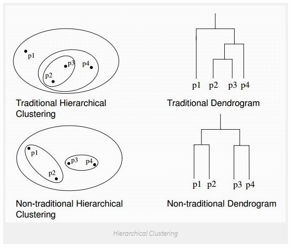

Algoritma K-Means Clustering¶
K-Means Clustering¶
adalah suatu metode penganalisaan data atau metode Data Mining yang melakukan proses pemodelan tanpa supervisi (unsupervised) dan merupakan salah satu metode yang melakukan pengelompokan data dengan sistem partisi.
Terdapat dua jenis data clustering yang sering dipergunakan dalam proses pengelompokan data yaitu Hierarchical dan Non-Hierarchical, dan K-Means merupakan salah satu metode data clustering non-hierarchical atau Partitional Clustering.

Metode K-Means Clustering berusaha mengelompokkan data yang ada ke dalam beberapa kelompok, dimana data dalam satu kelompok mempunyai karakteristik yang sama satu sama lainnya dan mempunyai karakteristik yang berbeda dengan data yang ada di dalam kelompok yang lain.

Dengan kata lain, metode K-Means Clustering bertujuan untuk meminimalisasikan objective function yang diset dalam proses clustering dengan cara meminimalkan variasi antar data yang ada di dalam suatu cluster dan memaksimalkan variasi dengan data yang ada di cluster lainnya.

Data clustering menggunakan metode K-Means Clustering ini secara umum dilakukan dengan algoritma dasar sebagai berikut:
- Tentukan jumlah cluster
- Alokasikan data ke dalam cluster secara random
- Hitung centroid/rata-rata dari data yang ada di masing-masing cluster
- Alokasikan masing-masing data ke centroid/rata-rata terdekat
- Kembali ke Step 3, apabila masih ada data yang berpindah cluster atau apabila perubahan nilai centroid, ada yang di atas nilai threshold yang ditentukan atau apabila perubahan nilai pada objective function yang digunakan di atas nilai threshold yang ditentukan
Contoh Kasus Perhitungan K-Means Clustering¶
Ditentukan banyaknya cluster yang dibentuk dua (k=2). Banyaknya cluster harus lebih kecil dari pada banyaknya data (k<n).

Inisialisasi centroid dataset pada tabel dataset diatas adalah C1 = {1 , 1} dan C2 = {2 , 1}. Inisialiasasi centroid dapat ditentukan secara manual ataupun random.
Untuk pengulangan berikutnya (pengulangan ke-1 sampai selesai), centroid baru dihitung dengan menghitung nilai rata-rata data pada setiap cluster. Jika centroid baru berbeda dengan centroid sebelumnya, maka proses dilanjutkan ke langkah berikutnya. Namun jika centroid yang baru dihitung sama dengan centroid sebelumnya, maka proses clustering selesai.
Rumus yang digunaka untuk menghitung distance space atau jarak data dengan centroid menggunakan Euclidiean Distance.

Pengulangan ke-1
Jarak data dengan Centroid C1 adalah:

Jarak data dengan Centroid C2 adalah:

Untuk seterusnya, hitung jarak pada setiap baris data, dan hasilnya seperti pada tabel dibawah.

Kelompokan data sesuai dengan cluster-nya, yaitu data yang memiliki jarak terpendek. Contoh; karena d(x1,c1) < d(x1,c2) maka x1 masuk ke dalam cluster 1. Pada tabel diatas, data n=1 masuk ke dalam cluster 1 karena dc1 < dc2, sedangkan n=2,3,4 masuk ke dalam cluster 2 karena dc2 < dc1.

Setelah mendapatkan label cluster untuk masing-masing data n=1,2,3,4 maka dicari nilai rata-ratanya dengan menjumlahkan seluruh anggota masing-masing cluster dan dibagi jumlah anggotanya.

Pengulangan ke-2

Pengulangan ke-3

Karena centroid tidak mengalami perubahan (sama dengan centroid sebelumnya) maka proses clustering selesai.
Sumber : https://informatikalogi.com/algoritma-k-means-clustering/